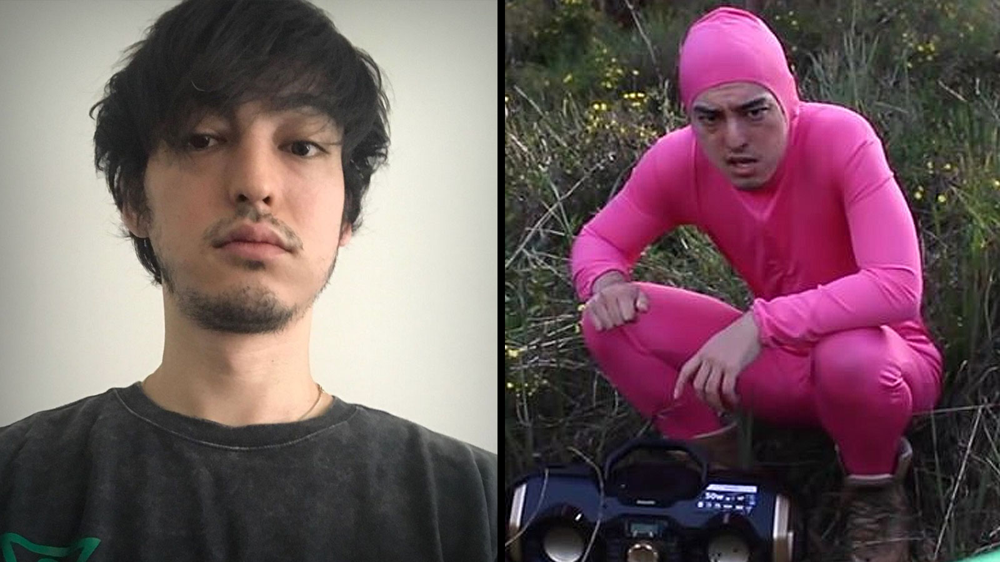
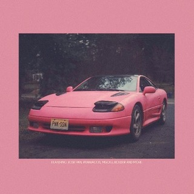
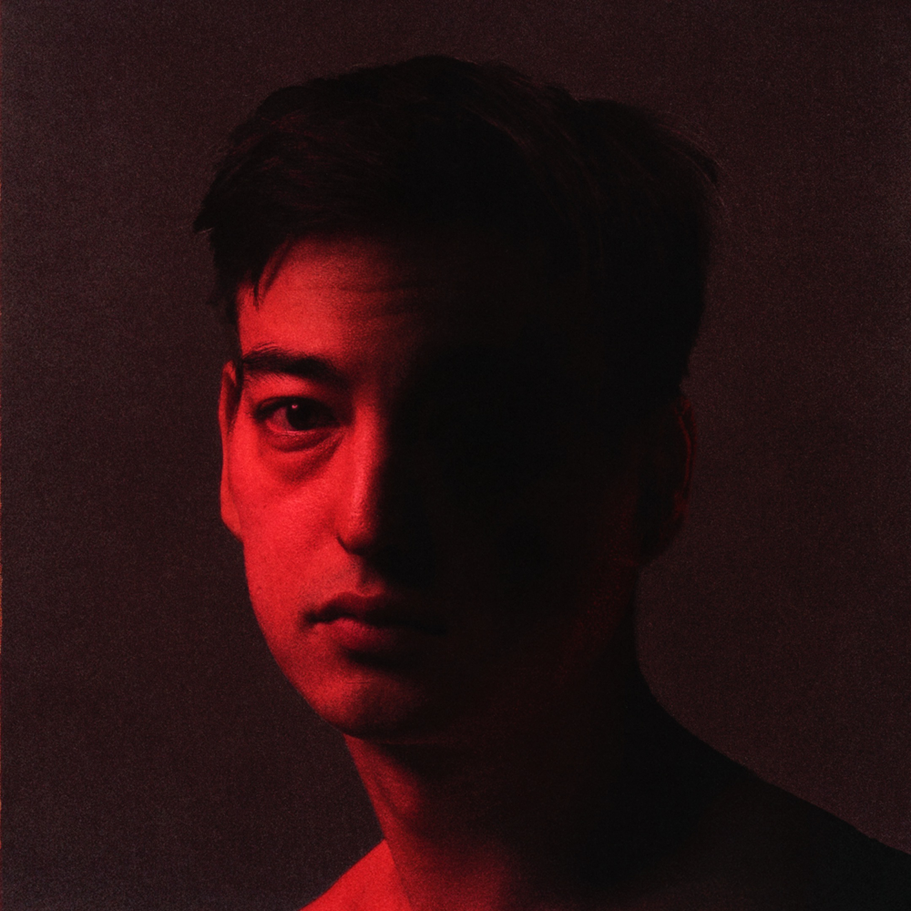

Joji is a Japanese singer-artist, who was previously famous for playing the characters Filthy Frank and Pink Guy during the 2010s. He is now known for producing R&B/hip-hop/lo-fi music such as Slow Dancing in the Dark and Gimme Love.
George Miller, known for his YouTube channels DizastaMusic and TVFilthyFrank, created the character "Filthy Frank" in 2012, gaining popularity as an anti-vlogger. His original channel had over 1 million subscribers, but he stopped posting content there in 2014 due to copyright and community strike risks, moving Filthy Frank content to a new channel called TVFilthyFrank, which amassed 7.76 million subscribers and over a billion views. He also started another channel, TooDamnFilthy, with 2.33 million subscribers. In 2017, he released a book called "Francis of the Filth," connecting to his Filthy Frank series. In December 2017, Miller announced he was quitting Filthy Frank content due to health issues and a lack of interest in continuing. In September 2018, he reaffirmed this decision due to his health condition in a BBC Radio 1 interview.
George Miller, known for his YouTube career, had a passion for music composition from the beginning. He initially created his YouTube channel to promote his music but found unexpected success with his Filthy Frank and Pink Guy personas. Pink Guy's music, characterized by humor, included an album called "Pink Season" that reached number 70 on the Billboard 200. He released one mixtape, one album, and one extended play under the name Pink Guy. In 2017, Miller performed as Pink Guy at SXSW and had plans for a tour, a third Pink Guy album, and personal music projects. However, by December 29, 2017, he ceased production of all Filthy Frank and Pink Guy content.
George Miller, known for his comedic and rap-based music as Pink Guy, transitioned to a more serious music career under the name Joji in late 2017. Joji's music reflected his personal interests, and he described it as being authentically him, not a character. His music journey began in Japan and evolved through his Pink Guy persona. He released songs as PinkOmega before revealing his true identity with singles like "Thom" and "You Suck Charlie" in 2015, leading to the announcement of his project "Chloe Burbank: Volume 1." In 2017, Joji joined 88rising and released several singles, including "I Don't Wanna Waste My Time," "Rain on Me," and "Will He." He performed live as Joji in 2017 and released his EP "In Tongues" in November 2017, followed by a deluxe version in February 2018. His single "Yeah Right" charted on Billboard's R&B Songs chart in May 2018. Joji's debut album, "Ballads 1," came out in October 2018 and peaked on the Billboard Top R&B/Hip Hop Albums Chart. He announced a North American tour in early 2019. Joji continued releasing music, including the single "Sanctuary" in June 2019. He collaborated with Rich Brian on "Where Does the Time Go?" and released singles like "Run" and "Gimme Love." Joji's album "Nectar" was initially set to release in July 2020 but was delayed to September due to the COVID-19 pandemic. In 2022, Joji released singles "Glimpse of Us" and "Yukon (Interlude)." His album "Smithereens" and the single "Die For You" came out in November 2022, followed by a North American tour in September 2022. In 2023, Joji performed at the Laneway Festival in Australia and announced the Pandemonium tour for North America, with additional dates in Australia, New Zealand, and Asia.
